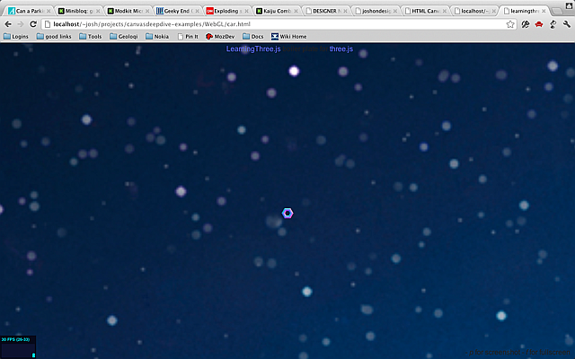
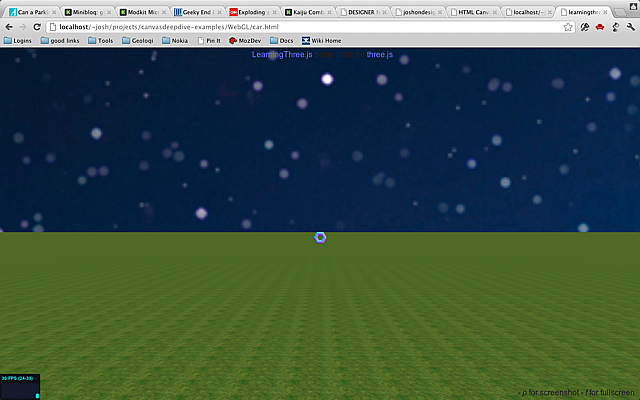

Building A Sky
For our hands on, we will create a new scene: a car that drives around on a large grassy plain under a starry sky. This is adapted from a series of great blog posts by Jerome, who also created the template builder and tQuery, which is like JQuery, but for ThreeJS. (original series.)
Start with a new template from the template builder. Now let's add a sky. The easy way to make a sky is to just put sky pictures on the sides of a big cube. The trick is that we will put the rest of the world inside of the cube. We will start by loading up images into a single cube texture like this:
//add skymap
//load sky images
var urls = [
"images/sky1.png",
"images/sky1.png",
"images/sky1.png",
"images/sky1.png",
"images/sky1.png",
"images/sky1.png",
];
var textureCube = THREE.ImageUtils.loadTextureCube(urls);The image sky1.png is included in the example code download.
Now we need a cube shader to draw it with standard uniforms (shader inputs.) Notice that we've set the tCube texture to be our texture.
//setup the cube shader
var shader = THREE.ShaderUtils.lib["cube"];
var uniforms = THREE.UniformsUtils.clone(shader.uniforms);
uniforms['tCube'].texture = textureCube;
var material = new THREE.ShaderMaterial({
fragmentShader : shader.fragmentShader,
vertexShader : shader.vertexShader,
uniforms : uniforms
});
Now, we need a cube geometry. Set the size to 10000. This will be a big cube. Now we add it to the scene. We set flipSided to true because a default cube has the texture drawn on the outside. In our case we are on the inside of the cube.
//create a skybox
var size = 10000;
skyboxMesh = new THREE.Mesh(
new THREE.CubeGeometry(size,size,size),material);
//IMPORTANT!! draw on the inside instead of outside
skyboxMesh.flipSided = true; // you must have this or you won't see anything
scene.add(skyboxMesh);
Now let's add a light from the sun. Without a light we cannot not see anything.
//add sunlight
var light = new THREE.SpotLight();
light.position.set(0,500,0);
scene.add(light);Here's what we've got so far:

Adding a Ground Plane
Now we want a ground plane. First you need to load the grass image (original source) as a texture. (The grass image is also included in the example code.) Set it to repeat in the x and y directions. The repeat values should be the same as the size of the texture, and usually should be a power of two (ex: 256).
//add ground
var grassTex = THREE.ImageUtils.loadTexture('images/grass.png');
grassTex.wrapS = THREE.RepeatWrapping;
grassTex.wrapT = THREE.RepeatWrapping;
grassTex.repeat.x = 256;
grassTex.repeat.y = 256;
var groundMat = new THREE.MeshBasicMaterial({map:grassTex});Next is the geometry. It is just a big plane in space. The size of the plane is 400 x 400 which is fairly large compared to the camera but very small relative to the size of the sky, which is set to 10000.
var groundGeo = new THREE.PlaneGeometry(400,400);Now we can combine them into a mesh. Set position.y to -1.9 so
it will be below the torus. Set rotation.x to 90 degrees so the
ground will be horizontal (a plane is vertical by default.) If you can't see,
the plane try setting doubleSided to true. Planes only draw on a
single side by default.
var ground = new THREE.Mesh(groundGeo,groundMat);
ground.position.y = -1.9; //lower it
ground.rotation.x = -Math.PI/2; //-90 degrees around the xaxis
//IMPORTANT, draw on both sides
ground.doubleSided = true;
scene.add(ground);Here's what it should look like now:

Adding a Car Model
To replace the torus with a car we will load an external model, in this case
a very detailed model of a Bugatti Veyron created by Troyano
. I got these from the ThreeJS examples
repo. You can find them in the example code download. Since this model is in
a binary format rather than JSON, we will load it up using the
THREE.BinaryLoader.
//load a car
//IMPORTANT: be sure to use ./ or it may not load the .bin correctly
new THREE.BinaryLoader().load('./VeyronNoUv_bin.js', function(geometry) {
var orange = new THREE.MeshLambertMaterial( { color: 0x995500, opacity: 1.0, transparent: false } );
var mesh = new THREE.Mesh( geometry, orange );
mesh.scale.x = mesh.scale.y = mesh.scale.z = 0.05;
scene.add( mesh );
car = mesh;
});Notice that the material is a MeshLambertMaterial rather than the MeshNormalMaterial we used before. This will give the car a nice solid color that is properly shaded based on the light (orange, in this case). This mesh is huge by default compared to the torus, so scale it down to 5%, then add it to the scene.
Here's what it looks like now:

Keyboard Control
Of course a car just sitting there is no fun. And it's too far away. Let's make it move. Currently the cameraControl object is moving the camera around. Remove that and create a new KeyboardState object where the cameraControl object was initialized. You will need to import vendor/threex/THREEx.KeyboardState.js at the top of your page.
<script src="vendor/threex/THREEx.KeyboardState.js"></script>// create a camera contol
//cameraControls = new THREEx.DragPanControls(camera)
keyboard = new THREEx.KeyboardState();Now, go down to the render() function. The keyboard object will let us query the current state of the keyboard. To move the car around using the keyboard replace cameraControls.update() with this code:
// update camera controls
//cameraControls.update();
if(keyboard.pressed("left")) {
car.rotation.y += 0.1;
}
if(keyboard.pressed("right")) {
car.rotation.y -= 0.1;
}
if(keyboard.pressed("up")) {
car.position.z -= 1.0;
}
if(keyboard.pressed("down")) {
car.position.z += 1.0;
}Now the car is "driveable" using the keyboard. Of course it doesn't look very realistic. The car can slide sideways. To fix it we need a vector to represent the current direction of the car. Add an angle variable and change the code to look like this:
if(keyboard.pressed("left")) {
car.rotation.y += 0.1;
angle += 0.1;
}
if(keyboard.pressed("right")) {
car.rotation.y -= 0.1;
angle -= 0.1;
}
if(keyboard.pressed("up")) {
car.position.z -= Math.sin(-angle);
car.position.x -= Math.cos(-angle);
}
if(keyboard.pressed("down")) {
car.position.z += Math.sin(-angle);
car.position.x += Math.cos(-angle);
}Next Steps
That's it for this hands on. If you wish to continue working with this example, here are a few things you might want to add.
- Make the camera follow the car.
- Make the car shiny. Look at the source to the original example that this was based on. [link].
- Make the car stop when you reach the edge of the world.
- Add the dot screen effect from the previous chapter to this scene.